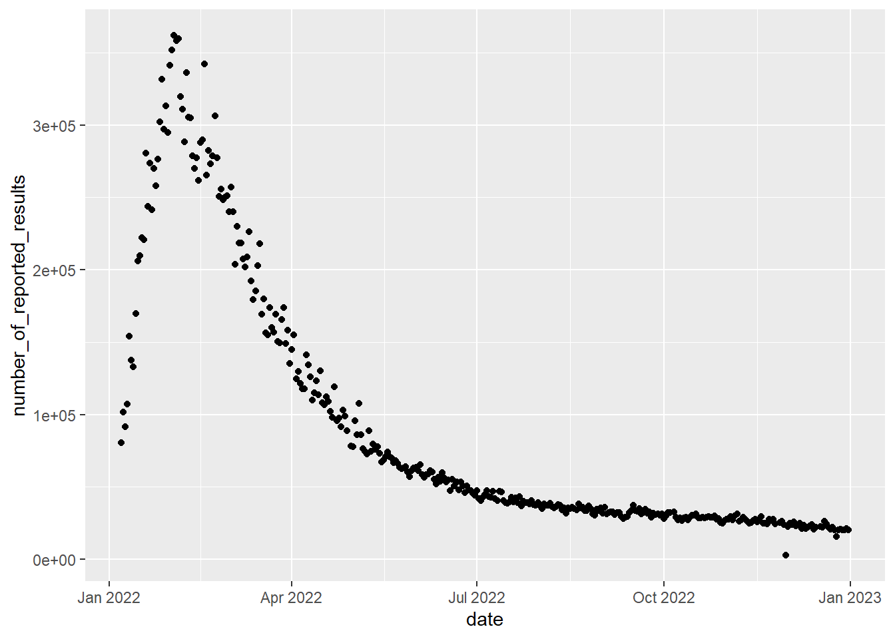
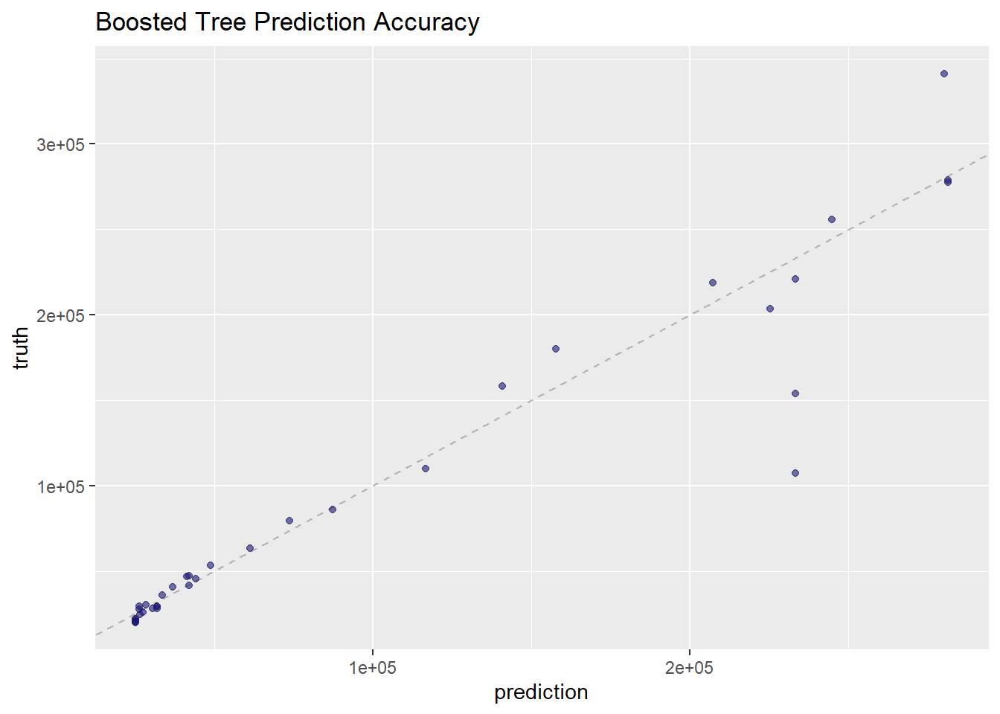

data<-read_excel("Problem_C_Data_Wordle.xlsx", skip=1) %>%
clean_names()MCM Project
Importing Libraries
Importing Data
Exploratory Analysis
#Visualizing Relationships
#Comparing Date to number of people that participate
data %>%
mutate(number_of_reported_results = log(number_of_reported_results), base = exp(1)) %>%
ggplot(aes(x=date, y=number_of_reported_results))+
geom_point()
#Are people getting better
data %>%
ggplot(aes(x=date, y=data$x7_or_more_tries_x))+
geom_point()Warning: Use of `data$x7_or_more_tries_x` is discouraged.
i Use `x7_or_more_tries_x` instead.#Are more people trying hard mode
data %>%
ggplot(aes(x=date, y=data$number_in_hard_mode))+
geom_point()Warning: Use of `data$number_in_hard_mode` is discouraged.
i Use `number_in_hard_mode` instead.
#First attempt Guesses over time
data %>%
ggplot(aes(x=date, y=data$x1_try))+
geom_point()Warning: Use of `data$x1_try` is discouraged.
i Use `x1_try` instead.
Problem 1: Predicting number of players
This needs to be a regression model. This data is in no way linear so the first attempt is to create a nonlinear regression method.
#Creating Data splits
set.seed(1234)
split<-initial_split(data, prop = .9)
training_data<-training(split)
test_data<-testing(split)## Basic Decision Tree ##
untuned_reg_tree<- decision_tree(mode = "regression",
engine = "rpart",
tree_depth = tune(),
min_n = tune(),
cost_complexity = tune())
reg_tree_grid<-grid_regular(tree_depth(),
cost_complexity(),
min_n(),
levels = 5)
folds<-vfold_cv(training_data)
reg_tree_wf<-workflow() %>%
add_model(untuned_reg_tree) %>%
add_formula(number_of_reported_results ~ date)
reg_tree_results<-reg_tree_wf %>%
tune_grid(resamples = folds, grid = reg_tree_grid)
best_reg_tree_params<-reg_tree_results %>%
select_best()Warning: No value of `metric` was given; metric 'rmse' will be used.#Tune Tree Model
tuned_reg_tree<-finalize_model(untuned_reg_tree, best_reg_tree_params)
#Depicting Accuracy
reg_tree_fit<-last_fit(tuned_reg_tree, number_of_reported_results ~ date, split) %>%
collect_predictions()
#Depicting Accuracy
reg_tree_fit%>%
ggplot(aes(number_of_reported_results, .pred))+
geom_abline(slope = 1, lty = 2, color = "gray50", alpha = 0.5) +
geom_point(alpha = 0.6, color = "midnightblue") +
ggtitle("Regression Tree Prediction Accuracy")Boosted Tree
## Boosted Tree xGBoost ##
untuned_reg_xgb<-boost_tree(mode = "regression",
engine = "xgboost",
mtry = tune(),
trees = 1000,
min_n = tune(),
tree_depth = tune(),
learn_rate = tune(),
sample_size = tune(),
loss_reduction = tune())
#Tuning Boosted Tree
reg_xgb_grid <- grid_latin_hypercube(
tree_depth(),
min_n(),
loss_reduction(),
sample_size = sample_prop(),
finalize(mtry(), training_data),
learn_rate(),
size = 30
)
reg_xgb_wf <- workflow() %>%
add_formula(number_of_reported_results ~ date) %>%
add_model(untuned_reg_xgb)
folds<-vfold_cv(training_data)
reg_xgb_res <- tune_grid(reg_xgb_wf,
resamples = folds,
grid = reg_xgb_grid,
control = control_grid(save_pred = TRUE))
best_reg_xgb_params<- select_best(reg_xgb_res)Warning: No value of `metric` was given; metric 'rmse' will be used.#Tuned Model
tuned_reg_xgb<-finalize_model(untuned_reg_xgb, best_reg_xgb_params)
#Measuring Accuracy
reg_xgb_fit<-last_fit(tuned_reg_xgb,number_of_reported_results ~ date, split) %>%
collect_predictions()
reg_xgb_fit%>%
ggplot(aes(number_of_reported_results, .pred))+
geom_abline(slope = 1, lty = 2, color = "gray50", alpha = 0.5) +
geom_point(alpha = 0.6, color = "midnightblue") +
ggtitle("Boosted Tree Prediction Accuracy")
#Predicting Number of Participants in March
future_date<-data_frame(date = as.Date(x = "2023/3/1"))Warning: `data_frame()` was deprecated in tibble 1.1.0.
i Please use `tibble()` instead.reg_xgb_wf<- reg_xgb_wf %>%
update_model(tuned_reg_xgb)